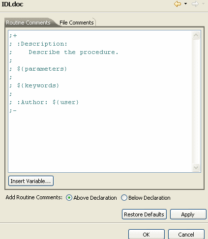

IDLdoc comment blocks begin with “;+” (semicolon and plus sign) and end with “;-” (semicolon and minus sign) characters.
The following example shows an IDLdoc comment block:
;+
; This widget program allows a user to display data as a surface
; using OG. The data can be rotated interactively.
; The widget interface can be resized.
;
; :Uses: MAKE_SURFACE_TREE
; :Author: Mark Piper, ITT VIS, 2007
;-
You can add these comments by hand, or you can use the comment block layouts provided by the workbench and discussed in the following section.
To insert an IDLdoc file comment block, place your cursor at the top of the file and select Source > Add File Comments.
To insert routine comment block, open the code file in the IDL Editor, place your cursor in the line just above or just below a routine and enter the keystrokes Ctrl+Shift+I.
You can also use the menu to insert routine comment blocks. Select Source > Add Routine Comments.
If a comment block is already in the source code file at the location where you want to insert a new comment block, the Editor does not erase the existing comment block, but inserts a new one into the correct location. (You set your preference for placing routine comments above or below routines, described in the following section.)
The IDLdoc Preferences page provides a basic layout of file and routine comment blocks that you can use for any of your code. You can customize the layout of comments and change them whenever you like. The comment layouts are available from within the IDL Workbench by selecting Window > Preferences > IDL > IDLdoc. The Preferences window for IDLdoc shows the default routine and file comments in separate tabs, described below:

Note: Content Assist is available in the Properties page. You can use this feature to help you customize the layouts for your purposes.
(On Macintosh platforms, using Ctrl+Space does not activate Content Assist. You can access Content Assist by using the Insert Variable button in the Properties page.)